Einträge in Übung
Bestimmung des Drehmomentes einer Welle
- Dez 11, 2023
Das Drehmoment einer Welle wird mit Hilfe der DMS-Messtechnik gemessen. Dehnungsmessstreifen (DMS) ändern aufgrund einer relativen Längenänderung \(\epsilon = \frac{\Delta L}{L}\) ihren Widerstandswert \(R(\epsilon) = k\epsilon\). Der \(k\)-Faktor beträgt hier 2,01 und der Widerstand beträgt \(300\,\Omega\). DMS messen entlang einer Achse Längenänderung.
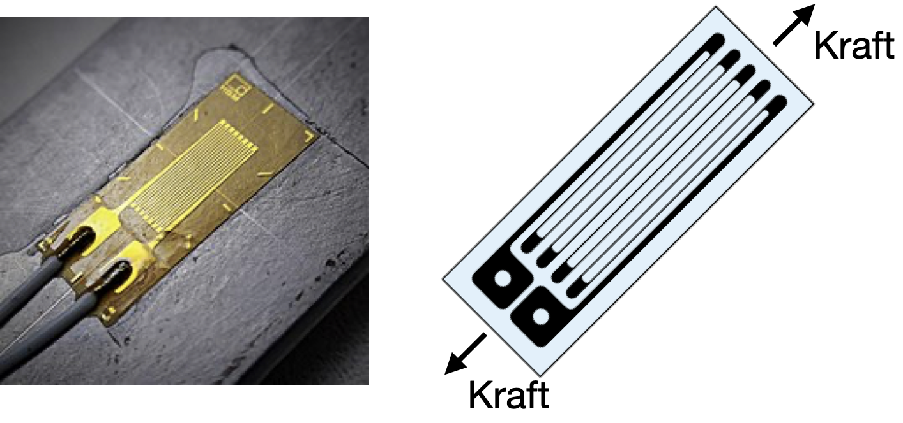Aussschlagsmessbrücke
- Dez 11, 2023
Gegeben ist eine Ausschlagmessbrücke bestehend aus den beiden Spannungsteilern \(R_1\) und \(R_2\), bzw. \(R_3\) und \(R_4\).
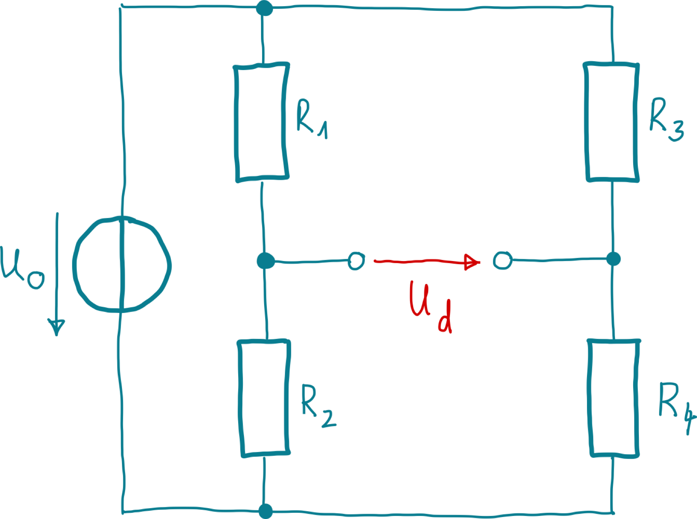Verstärkerschaltung
- Nov 29, 2023
Gegeben sei die in der Abbildung dargestellte Verstärkerschaltung mit \(R_1 = 1\,\mathrm{k\Omega}\), \(R_3 = R_1 || R_2\), wobei der Operationsverstärker eine Temperaturempfindlichkeit von \(|U_\mathrm{OS} / \Delta \vartheta | = 2{,}5\mathrm{\mu V / K}\) hat.
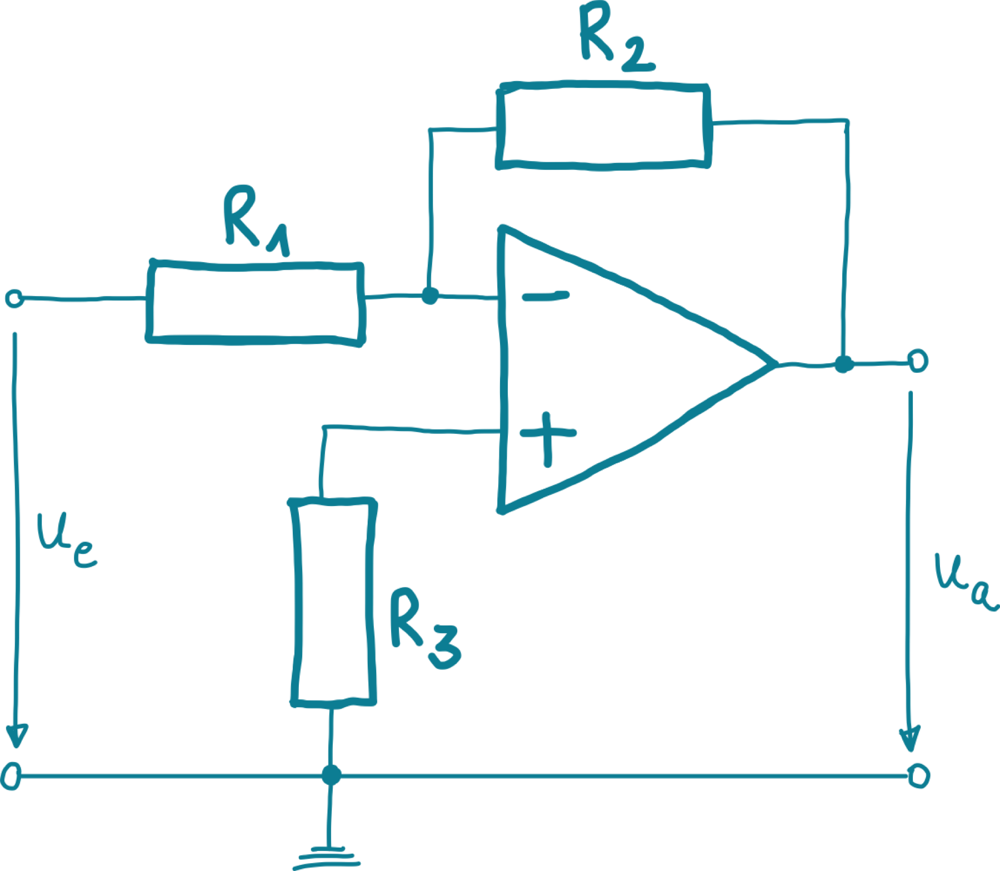Systematische Messabweichung II
- Nov 29, 2023
Zwei unbekannte Widerstände \(R\) im \(\mathrm{k\Omega}\)-Bereich werden mit zwei Messschaltungen bestimmt:
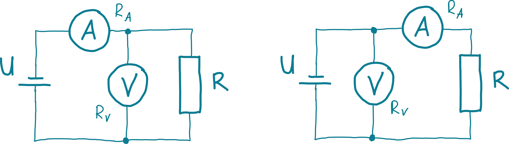Systematische Messabweichung
- Nov 29, 2023
Zwei unbekannte Widerstände \(R\) im \(\mathrm{k\Omega}\)-Bereich werden mit zwei Messschaltungen bestimmt:
Leistungsmessung bei Gleichspannung
- Nov 29, 2023
Wir wollen die rein durch die jeweilige Anschaltung entstehenden Messabweichungen einer Leistungsmessung bei Gleichstrom an einem Beispiel aufzeigen. Hierzu nehmen wir einen handelsüblichen Gleichstrommotor als Verbraucher an, der laut Datenblatt bei Speisung mit \(24\,\mathrm V\) Gleichspannung einen Nennstrom von \(3{,}0\,\mathrm A\) verbraucht.
Sprungantwort eines Schwingkreises
- Nov 23, 2023
Als einfaches Messsystem 2. Ordnung wird ein RLC-Schwingkreis betrachtet. Stellen Sie die Übertragungsfunktion (im Frequenzraum) des RLC-Gliedes durch die Maschengleichung auf. Die Abklingkonstante sei mit \(\delta = \frac{R}{2L}\) definiert und die Eigenkreisfrequenz ist \(\omega_0 = \sqrt{\frac{1}{LC} - \left( \frac{R}{2L} \right)^2}\). Transformieren Sie die Sprungantwort mittels der Laplace-Tabelle im Anhang zurück in den Zeitbereich und skizzieren Sie diese für verschiedene Dämpfungen (schwach gedämpft \(\delta << \omega_0\), gedämpft, aperiodischer Grenzfall \(\omega_0 = 0\)).
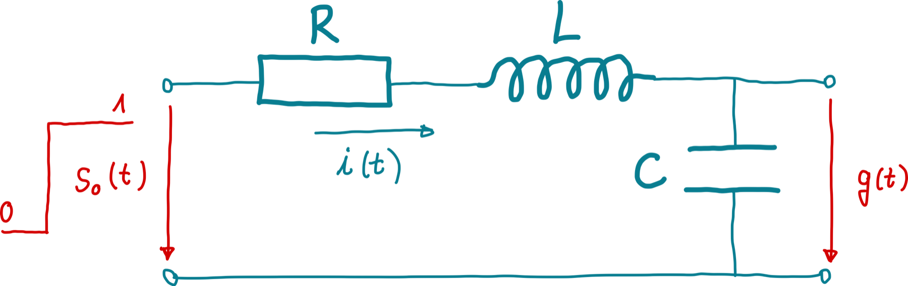Leistungsmessung bei Wechselgrößen
- Nov 23, 2023
Es stehen zwei Leistungsmesser W1 und W2 zur Verfügung, deren Strompfade mit dem Strom \(i_1 = i_2 = \hat i \sin(\omega t + \varphi)\) beaufschlagt sind. Am Spannungspfad von W1 liegt \(u_1 = \hat u \sin(\omega t)\) und an W2 liegt \(u_2=\hat u \cos(\omega t)\).
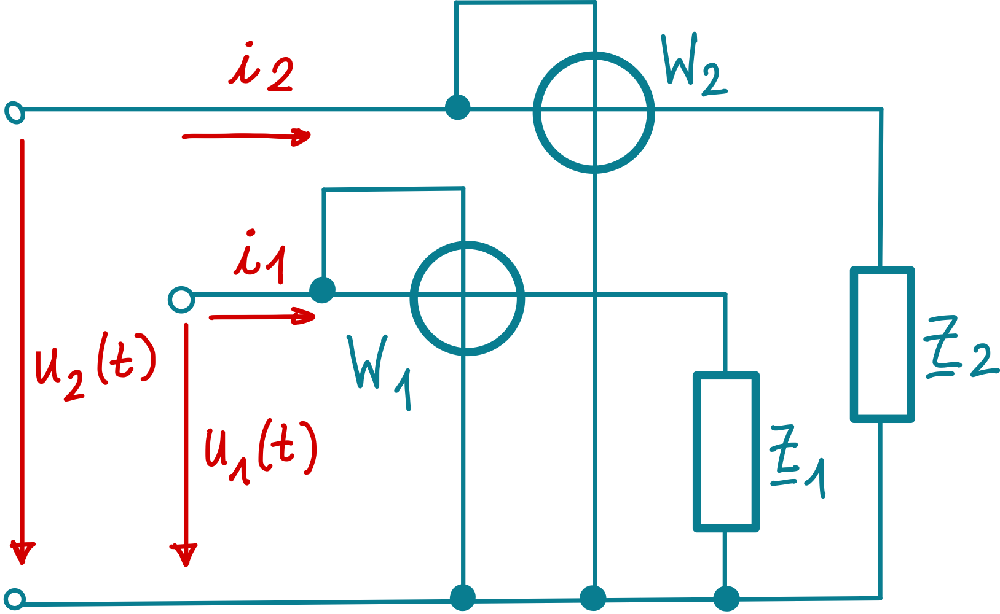Kraftmessung mittels Piezoelektrizität
- Nov 23, 2023
Ein piezoelektrischer Kraftaufnehmer in Form einer Plattenkondensatoranordnung aus Quarz mit der Empfindlichkeit \(k=2{,}3\cdot 10^{-12}\,\mathrm{As/N}\), der Fläche \(A=10\,\mathrm{cm^2}\), der Dicke \(d=1\,\mathrm{mm}\), dem spezifischen Widerstand \(\rho=1014\,\mathrm{\Omega cm}\), der relativen Dielektrizitätszahl \(\varepsilon_r=5\) wird mit einer Kraft \(F=103\,\mathrm N\) belastet (Hinweis: \(\varepsilon_0=8{,}854\cdot 10^{-12}\,\mathrm{As/Vm}\)).
Kapazitiver Sensor für Füllstandsmessung
- Nov 23, 2023
Ein Plattenkondensator (\(H\): Höhe der Platten, \(B\): Breite der Platten, \(d\): Plattenabstand) wird zur Füllhöhenmessung von Bier (wahlweise „Astra“ oder „Herry“) in einem Brauereibehälter eingesetzt. Der Behälter ist bis zur Höhe \(h\) mit dem jeweiligen Bier gefüllt, der restliche Behälter ist mit Luft gefüllt.
Fourier-Transformation Sägezahn
- Nov 23, 2023
Gegeben sind die folgenden zwei Zeitfunktionen \(x_1(t)\) und \(x_2(t)\) in der Abbildung.
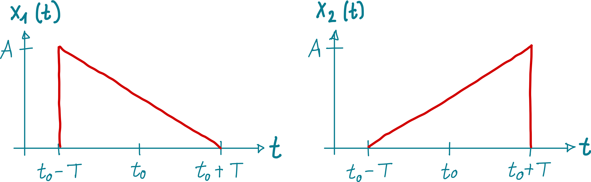Signal-Rausch-Verhältnis bei einer Tiefpass-Filterung
- Nov 22, 2023
Die Güte eines Signals wird in der Systemtheorie über ein Signal-Rausch-Verhältnis (Signal-Noise-Ratio SNR) beschrieben. Es ist definiert als das Verhältnis der mittleren Nutzsignalleistung zur mittleren Rauschsignalleistung:
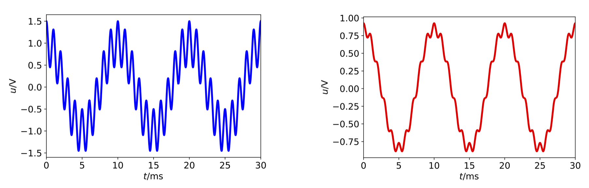Passiver RC-Tiefpass 1. Ordnung
- Nov 22, 2023
Ein Messgerät mit einem Verzögerungsverhalten 1. Ordnung, also einem Tiefpassverhalten, und einer 3dB-Grenzfrequenz von \(f_0 = 1\,\mathrm{MHz}\) wird mit einem periodischem Spannungssignal beaufschlagt.
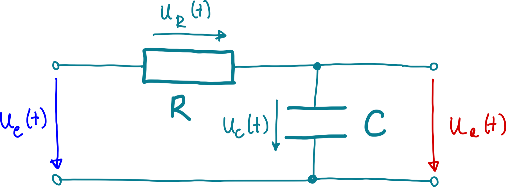Passiver CR-Hochpass 1. Ordnung
- Nov 22, 2023
In der Vorlesung wurde das Zeitverhalten der RC-Tiefpass-Schaltung erläutert. In dieser Aufgabe sollen die dort gebrachten Überlegungen auf ein CR-Hochpass-Messglied angewendet werden. Gegeben ist die Schaltung in der Abbildung.
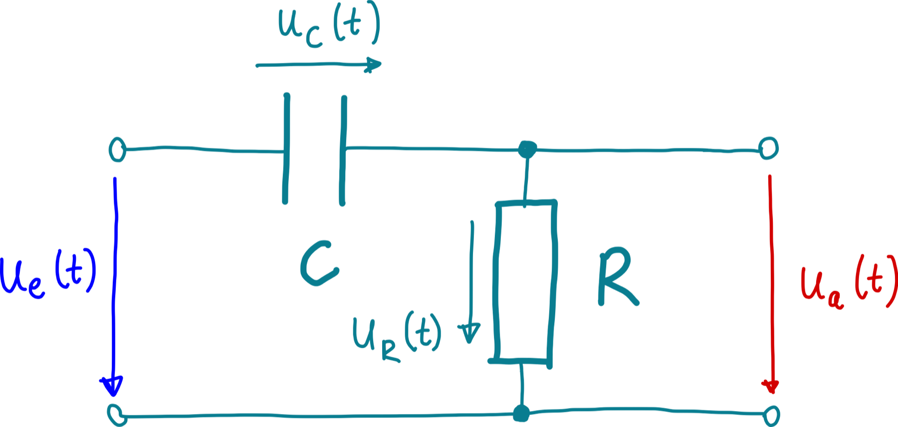Kapazitive Füllstandsmessung
- Nov 15, 2023
Bei der kapazitiven Füllstandsmessung nutzt man die Tatsache aus, dass Flüssigkeiten eine relative Dielektrizitätskonstante \(\epsilon_r\) größer als eins besitzen. Als Messgrößenumformer kommt daher ein Kondensator zum Einsatz, der durch die Behälterwand und eine Stabelektrode gebildet wird (siehe Abbildung).
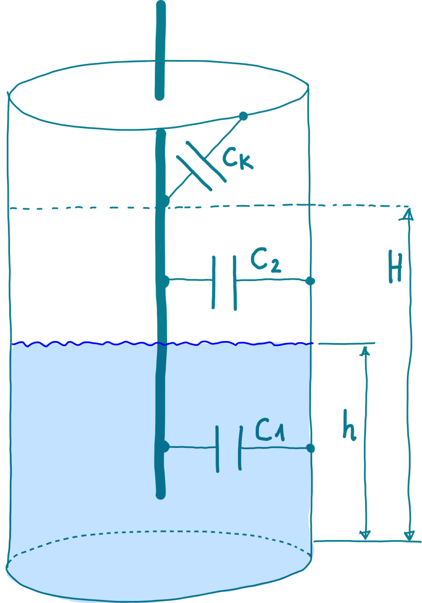Abtastung eines Dreiecksignals
- Nov 15, 2023
Ein als ideal angenommenes Dreiecksignal mit einer Periodendauer von \(1\,\mathrm{ms}\) werde mit einer Abtastrate von \(10\,\mathrm{kHz}\) digitalisiert. Geben Sie an, ob in diesem Fall das Abtasttheorem nach Shannon erfüllt ist! Begründen Sie Ihre Antwort!
Stromquelle mit periodischem Rechteckpuls
- Nov 08, 2023
Eine Stromquelle liefert Ihnen einen periodischen Rechteckpuls laut dem angegebenen Stromzeitdiagramm.
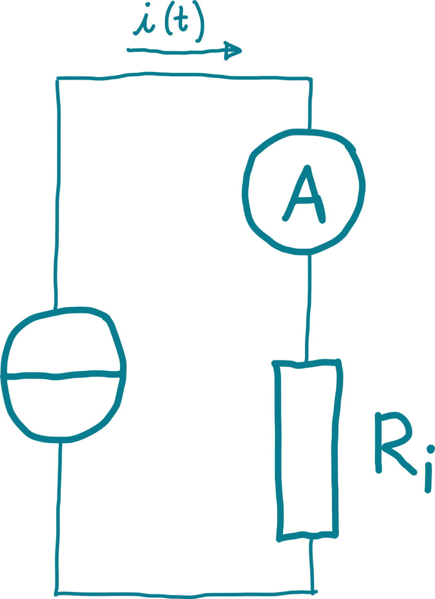Quantisierungsabweichung infolge der Digitalisierung
- Nov 08, 2023
Die relative Abweichung infolge der Quantisierung soll kleiner als 0,02% bleiben. Wie groß muss die Auflösung des zu verwendenden AD-Wandlers mindestens sein?
Phasenanschnittsteuerung
- Nov 08, 2023
An einem Widerstand wird die umzusetzende Leistung mit einem Thyristorsteller, der eine Phasenschnittsteuerung realisiert, eingestellt. Gegeben sind die sinusförmige Wechselspannung mit \(U = 230\,\mathrm V\), der Widerstand des Verbrauchers mit \(R=1{,}5\,\mathrm{k\Omega}\) und der Phasenanschnittwinkel \(\phi = 45^\circ\). Ermitteln Sie die im Widerstand \(R\) umgesetzte Leistung.
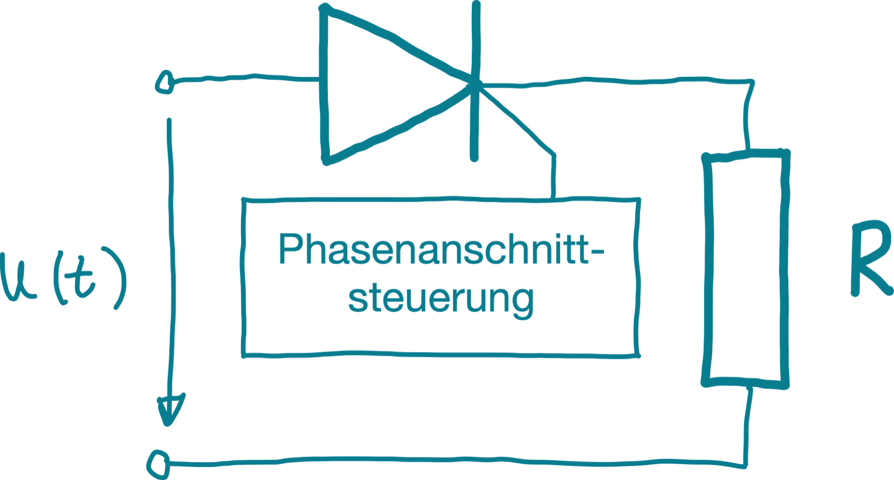Einweg-Gleichrichter
- Nov 08, 2023
Gegeben sei eine sinusförmige Spannung \(u(t)\) mit einer Amplitude von \(5\,\mathrm V\) und der Periode \(T\).
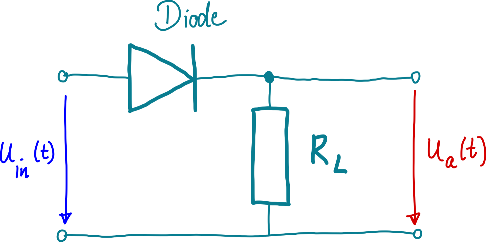Fourierreihe eines Rechteckpulses
- Nov 01, 2023
Bestimmen Sie die komplexe und die reelle Fourier-Reihe für die gegebene Sägezahn-Spannung. Wie lauten die Koeffizienten für \(k = 1,2,3,4,5\)? Skizzieren Sie das Betragsspektrum.
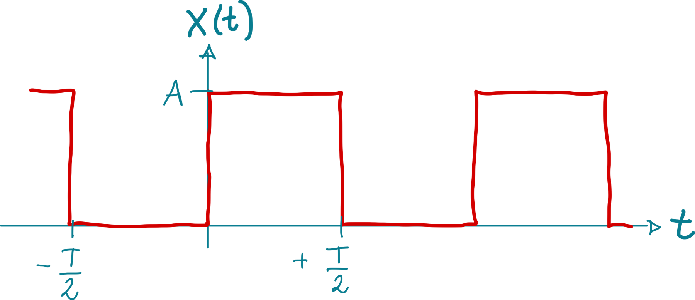Fourierreihe einer Sägezahn-Spannung
- Nov 01, 2023
Bestimmen Sie die komplexe und die reelle Fourier-Reihe für die gegebene Sägezahn-Spannung. Wie lauten die Koeffizienten für \(k = 1,2,3,4,5\)? Skizzieren Sie das Betragsspektrum.
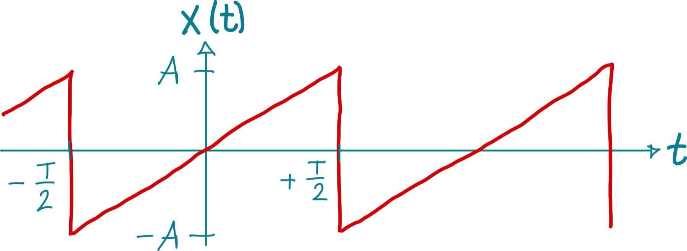Fourierreihe einer Dreieck-Schwingung
- Nov 01, 2023
Bestimmen Sie die komplexe und die reelle Fourier-Reihe für die gegebene Dreieck-Schwingung. Wie lauten die Koeffizienten für \(k = 1,2,3,4,5\)? Skizzieren Sie das Betragsspektrum.
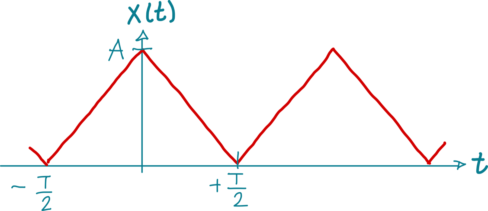Fourier-Transformation Rechteck
- Nov 01, 2023
Gegeben ist die folgenden Zeitfunktionen \(x(t)\):
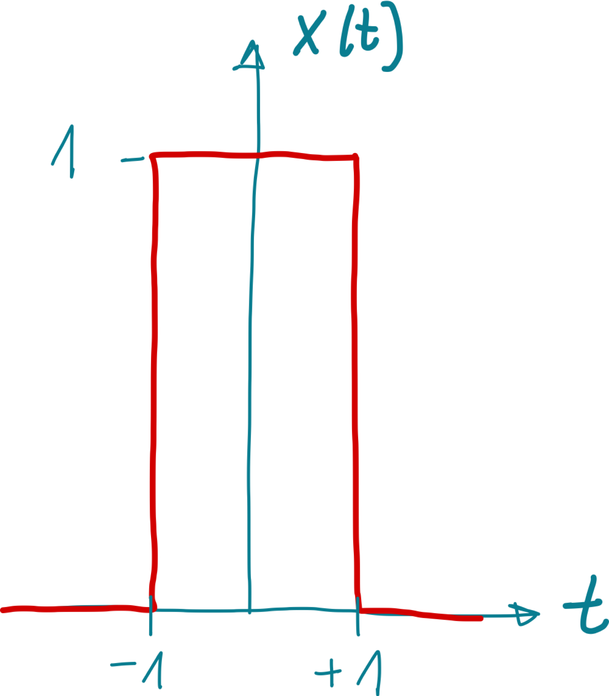Hall-Konstante: Lineare Regression
- Okt 25, 2023
Um die Hall-Konstante \(A_\mathrm H\) eines neuen Werkstoffs zu bestimmen haben Sie eine Messreihe durchgeführt, bei welcher in bestimmten Arbeitspunkten jeweils Strom und Spannung an einem Hall-Element gemessen wurden. Unter Berücksichtigung der relevanten Konstanten – magnetische Flussdichte und Dicke des Hall-Elements – erhalten Sie die in nachfolgender Tabelle zusammengefassten \(x-y\)-Wertepaare:
Dampfdruckthermometer Least-Square-Verfahren
- Okt 25, 2023
Mit dem Dampfdruckthermometer kann die Temperatur aus dem Dampfdruck einer Flüssigkeit bestimmt werden. Die Flüssigkeit wird mit der Messstelle in einen thermischen Kontakt gebracht. Der Dampfdruck nimmt mit der Temperatur der Flüssigkeit beschleunigt zu und kann durch folgende Exponentialfunktion beschrieben werden:
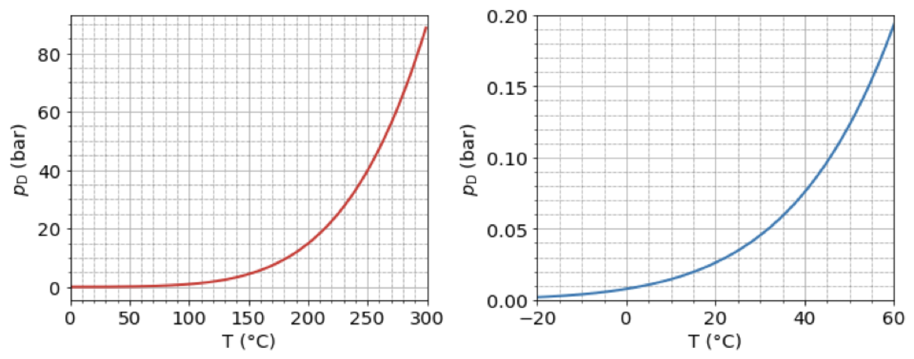Dampfdruckthermometer
- Okt 18, 2023
Mit dem Dampfdruckthermometer kann die Temperatur aus dem Dampfdruck einer Flüssigkeit bestimmt werden. Die Flüssigkeit wird mit der Messstelle in einen thermischen Kontakt gebracht. Der Dampfdruck nimmt mit der Temperatur der Flüssigkeit beschleunigt zu und kann durch folgende Exponentialfunktion beschrieben werden:
Widerstandsmessung
- Okt 11, 2023
Für eine Qualitätskontrolle eines Automobilzulieferers werden 3 Stichproben aus einer Lieferung entnommen und in drei Gruppen A, B, C mit jeweils 12 Widerständen eingeteilt. Komponete A hat einen
Stichprobe Qualitätssicherung
- Okt 11, 2023
In einer Produktion sollen Spiralfedern mit einer Federkonstsanten \(k_F = (2{,}2 \pm 0{2})\,\mathrm{N/mm}\) (Garantiefehlergrenze) hergestellt werden. Die Qualitätssicherung erfolgt durch eine Stichprobenprüfung an 10 zufällig ausgewählten Federn. Die Federkonstante \(k\) wird aus der Kraft \(F\) und der relativen Wegänderung \(\Delta l\) wie folgt berechnet

Dichtemessung einer Flüssigkeit
- Okt 11, 2023
Die Dichte eines flüssigen Mediums kann unter Ausnutzung des Archimedischen Prinzips ermittelt werden. Hiernach taucht ein Körper so weit in eine Flüssigkeit ein, bis die Gewichtskraft der verdrängten Flüssigkeit der Gewichtskraft des eingetauchten Körpers entspricht. Je kleiner also die Dichte der zu untersuchenden Flüssigkeit ist, desto tiefer wird ein schwimmender Prüfkörper in diese eintauchen.


Tiefpass mit Sägezahnspannung
- Dez 24, 2022
Ein Messgerät mit einem Verzögerungsverhalten 1. Ordnung, also einem Tiefpassverhalten, und einer 3,dB-Grenzfrequenz von \(f_0 = 1\,\mathrm{MHz}\) soll im Folgenden charakterisiert werden.
Kolbenmanometer
- Dez 24, 2022
Ein Kolbenmanometer, auch als Druckwaage bezeichnet, ist ein Instrument, mit welchem in einer Flüssigkeit oder einem Gas ein definierter Druck dargestellt werden kann, indem auf einen Kolben mit bekanntem Querschnitt eine definierte Kraft ausgeübt wird. In der Praxis werden hierzu auf den Kolben Massestücke aufgelegt, welche im Schwerefeld der Erde eine Gewichtskraft auf den Kolben ausüben.
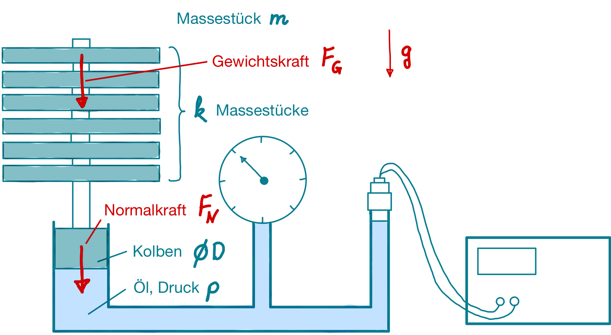Sprung- und Impulsantwort und Übertragungsfunktion
- Nov 29, 2022
Die Sprungantwort eines LTI-Systems lautet
Impulsantwort hintereinander geschalteter Systeme
- Nov 29, 2022
Hinter einem Übertragungskanal mit der Impulsantwort \(h_K(t)\) befindet sich der Filter eines Empfängers mit der Impulsantwort \(h_E(t)\). Das System ist in der folgenden Abbildung dargestellt.
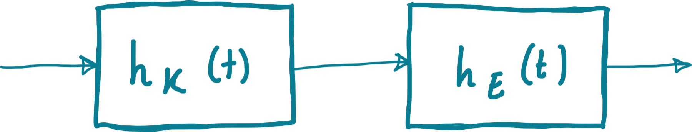Faltungsintegral
- Nov 29, 2022
Gegeben sei ein RC-Tiefpass 1. Ordnung. Die Impulsantwort \(h(t)\) ist für \(T = RC\) wiefolgt gegeben:
Bode-Diagramm
- Nov 29, 2022
Zur Darstellung von Übertragungsverhalten werden Bode-Diagramme zur Darstellung des Frequenzgangs benutzt. Durch die logarithmische Darstellung der Amplitudenverhältnisse lassen sich aus mehreren Übertragungssystemen zusammengesetzte Systeme leichter analysieren. Die logarithmische Darstellung bildet nämlich die Multiplikation der einzelnen Funktionen auf eine einfache Addition ab.
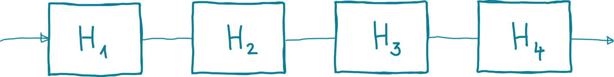